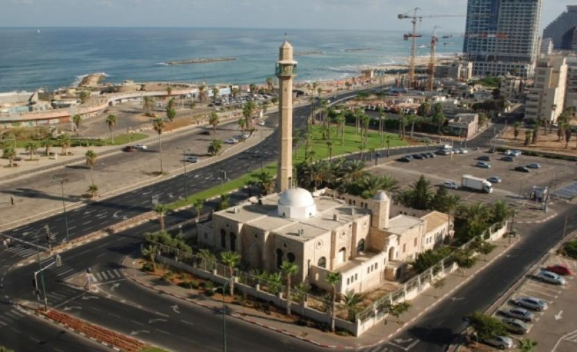
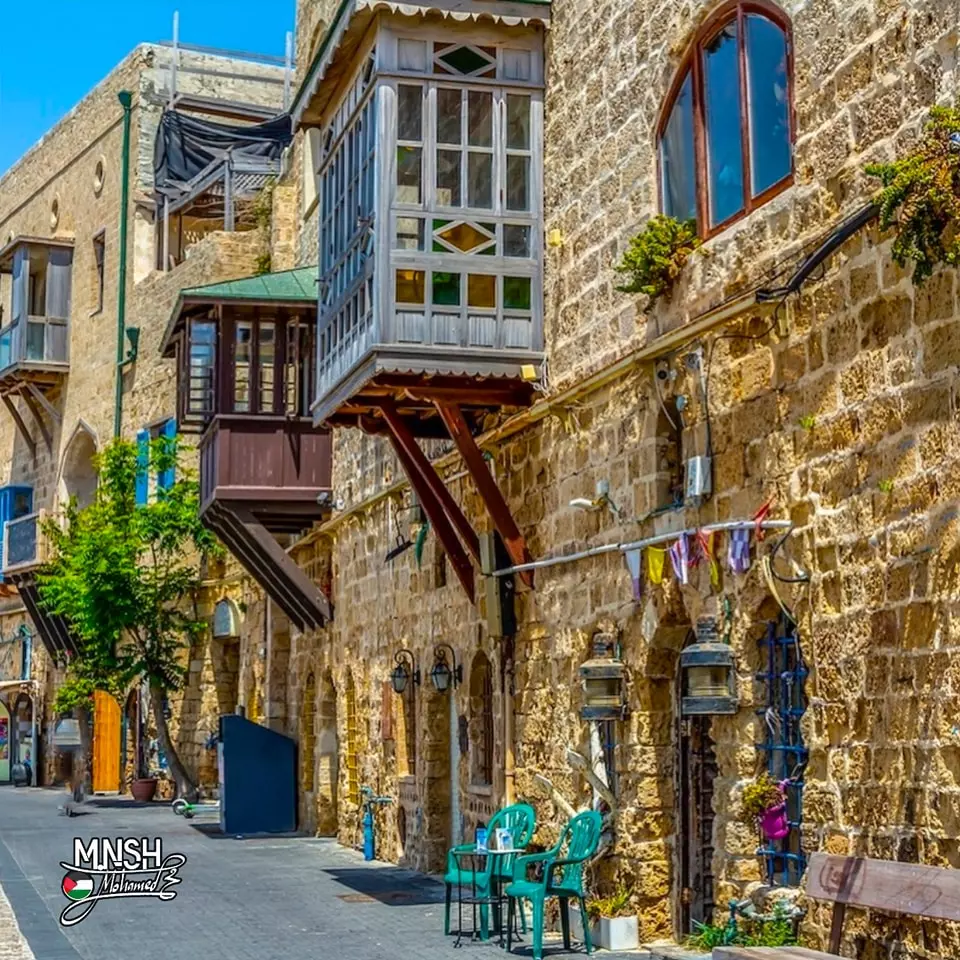
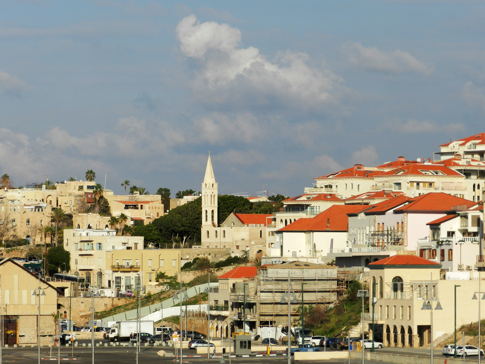

.jpg)
مسجد المحمودية

جامع المحمودية أو مسجد يافا الكبير مسجد أثري يعود للحقبة العثمانية
ويقع على شاطئ البحر الأبيض المتوسط، في البلدة القديمة في يافا، على
ساحة الشهداء تحديدًا، حيث برج الساعة. وتم الانتهاء من تشييده عام 1812
أثناء الحكم العثماني.
يتكون من دورين، ويمتاز بضخامته ويوجد بجواره سبيل ماء يعرف بسبيل
المحمودية أو سبيل ماء سليمان باشا. وهو يُعتبر من الآثار المعمارية
الإسلامية والعربية القليلة في المدينة، بعد أن قام الاحتلال الإسرائيلي
بهدم معالم بأكملها. وهو على طراز عثماني، ذو قباب ستة ومنارة واحدة.
مسجد المحمودية يافا (ويكيبيديا)
مدة الزيارة : ساعة
البلدة القديمة

يافا القديمة هي أقدم جزء من مدينة يافا التي تقع في فلسطين التاريخية.
تضم يافا القديمة اليوم العديد من المعارض الفنية والمطاعم والمسارح
والمتاحف والنوادي الليلية، وهي أحد مناطق الجذب السياحي الرئيسية في
فلسطين المحتلة.
تقع يافا القديمة شمال غرب يافا، على تلة على ضفاف البحر الأبيض المتوسط،
جنوب مدينة تل أبيب، تمتد جذورها التاريخية لأكثر من 4000 سنة، وكانت
ميناءً حيويًا لخدمة المدن الداخلية في فلسطين التاريخية، بما في ذلك
القدس، منذ العصور القديمة حتى العصر الحديث.
يافا القديمة (ويكيبيديا)
مدة الزيارة : ساعة
سوق بابا القديم
.jpg)
لقد كان لوالي مدينة يافا الهمام محمد باشا أبو نبوت دور هامّ في تأسيس
العديد من أسواق المدينة، كما جعل من إيراداتها وقفًا يُخصص لدعم جامع
ومدرسة جامع يافا الكبير. ومن أهم الأسواق التي قام على بنائها، سوق
الفرج الواقع إلى الجنوب من الجامع الكبير.
تجمّعت الأسواق في مدينة يافا بجانب بعضها البعض بشكل يخلق تكاملاً لها
بنفس نمط تخطيط المدن الإسلاميّة المسوّرة. فشكّلت مركزًا تجاريًّا
هامًّا. وتشكلت الأسواق من مجموعة من الدكاكين. تركزت معظم الأسواق في
المنطقة الموالية لباب المدينة القديم بالإضافة لمنطقة جامع يافا الكبير.
ثم امتدت إلى أطراف بعض الحارات مثل حارة الشيخ إبراهيم وحارة . السوق
الذي أنشأه الوالي أبو نبوت، وقد تمت إزالته عند توسعة مدخل البلدة
القديمة في زمن الوالي حسن بك الحابي عام 1914-1915. يعتبر سوق الفرج من
أكبر أسواق مدينة يافا. له مدخلان أحدهما يُدخل منه إلى ساحة جامع يافا،
والثاني يرتبط مع الشارع الرئيسي الذي يصل إلى بوابة البلدة. ضم سوق
الفرج إحدى عشرة دكانًا، منها ما هو موقوف على الجامع الكبير ومدرسته
ودكاكين أخرى كثيرة. ترتّبت هذه الدكاكين في صفّين متقابلين، وينتهي
السوق ليُفضي إلى ساحة يتوسّطها بركة في الجهة الشماليّة الشرقيّة
المواجهة لجامع يافا الكبير.
أسواق يافا (ويكيبيديا)
مدة الزيارة : ساعة
برج الساعة
.jpg)
برج الساعة أو ساحة الشهداء في يافا، هو برج يعود تاريخه للحقبة
العثمانية في فلسطين. يقع وسط مدينة يافا، وهو واحد من 7 أبراج أقيمت في
مدن فلسطين في العام 1901 احتفالاً بمرور 25 عاماً على اعتلاء السلطان
عبد الحميد الثاني العرش العثماني
(تقع الأبراج الأخرى في القدس، وحيفا، وعكا، وصفد، والناصرة، ونابلس -
إلاّ أن برج القدس هدمته القوات البريطانية عند دخولها للمدينة). ويعتبر
أحد أهم الآثار المعمارية الإسلامية العثمانية في المدينة، بعد أن قام
الاحتلال الإسرائيلي بهدم الكثير من معالم المدينة.
تم الانتهاء من تشييده عام 1906 وقد أخذت التسمية من اسم السلطان عبد
الحميد.
برج الساعة (ويكيبيديا)
مدة الزيارة : ساعة
ميناء يافا
.jpg)
ميناء يافا هو أحد أقدم وأهم موانئ فلسطين التاريخية. يقع اليوم ضمن على
الشاطئ الشرقي للبحر المتوسط. أصبح ميناء يافا بعد النكبة، ميناء ثانويا
لإستخدام قوارب الصيد المتوسطة والصغيرة، بعد قرار إسرائيل عام 1965 بمنع
السفن الكبيرة من الرسو عليه، بعد أن كان بوابة الفلسطينيين إلى العالم
الخارجي قبل ذلك. يوجد منارة تقع فوق الميناء.لميناء يافا تاريخ يمتد
لأكثر من 3 الآف عام، حيث يُعد أحد أقدم موانئ العالم. تم ذكر الميناء في
عدة نصوص تاريخية قديمة، بما فيها التوراة وعند الفراعنة.
وكان خلال فترة الانتداب البريطاني على فلسطين، وقبلها في العهد العثماني
أحد أهم موانئ فلسطين الذي يُصدر منه إلى جميع أنحاء العالم.كانت مدينة
يافا، ميناء فلسطين الأول قبل أن ينهض ميناء حيفا، حيث كان ميناءً
للتصدير والاستيراد، وقد صدرت من هذا الميناء الحمضيات والصابون والحبوب،
وتم استيراد المواد التي احتاجت إليها فلسطين وشرق الأردن مثل الاقمشة
والأخشاب والمواد الغذائية. أما على صعيد التجارة الداخلية،
فقد كانت مدينة يافا تعج بالأسواق والمحلات التي يزورها الكثير من سُكان
القرى والمدن المجاورة. ومن أشهر أسواقها: سوق بسترس - سوق اسكندر عوض -
سوق الدير - سوق الحبوب - سوق المنشية - سوق البلابسة - سوق الإسعاف.
حي العجمي

العجمي هو حي عربي يقع جنوب يافا القديمة على شاطئ البحر الأبيض المتوسط.
تطور الحي في أواخر القرن التاسع عشر بعد هدم أسوار مدينة يافا، وبحلول
عشرينيات القرن العشرين أصبح منطقة حضرية مكتظة بالسكان.
سمي الحي على اسم مقام إبراهيم العجمي ويعتقد البعض أنه من صحابة النبي.
وبحسب التقاليد، فقد دُفن في الضريح جنوب الحي. وبني مسجد لاحقاً في نفس
الموقع في 1895، وهو مسجد العجمي، الذي سُمي باسمه.
كان للعجمي دور بارز في تاريخ يافا بما في ذلك حرب فلسطين 1947-1949
وأحداث النكبة. في أعقاب قرار الحكومة البريطانية بإنهاء الانتداب على
فلسطين، اندلعت الاشتباكات بين العصابات الصهيونية
(الهاغاناه والإرغون) والقوات غير النظامية من العرب الفلسطينيين. وشهدت
يافا بعضاً من أعنف هذه الاشتباكات. واستسلمت يافا في 13 مايو 1948،
أي قبل يوم واحد من إعلان قيام دولة إسرائيل؛ واضطر السكان العرب
المتبقون إلى الانتقال إلى العجمي، حيث خضعوا للأحكام العرفية. وأشارت
التقديرات بحلول نهاية الحرب إلى أن أكثر من 90% من سكان يافا العرب
الفلسطينيين فروا. وبقي حوالي 3,000 شخص في يافا.
حي العجمي (ويكيبيديا )
قائمة خطوات لجولة في الحي العجمي
1.التعرف على تاريخ حي العجمي2.استكشاف الشوارع والأزقة القديمة
3.رصد البيوت الفلسطينية القديمة
4.زيارة المعالم الدينية
5.التعرف على الحياة الاجتماعية
6.توثيق الذاكرة الفلسطينية
7.رصد التغيرات العمرانية